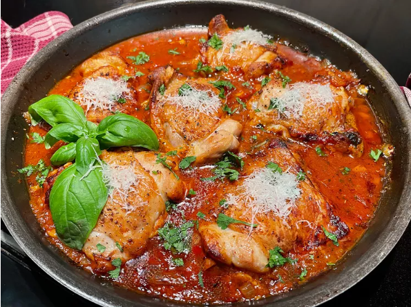

Chicken Fra Diavolo

This chicken fra diavolo is chicken thighs in my version of fra diavolo sauce,
the spicy Italian pepper and tomato sauce with fresh herbs and white wine,
usually used with seafood. We like spicy, and I wondered, “why not chicken?” We liked it with crusty bread, to get every last drop of the sauce.
Ingradients
- 6 skin-on,bone-in chicken thighs
- salt and freshly ground black pepper to taste
- 1 tablespoon olive oil
- 1 tablespoon unsalted butter
- 1 small onion,chopped
- 1 hot red pepper,chopped
- 4 cloves garlic,minced
- 2 teaspoons italian seasoning
- 1 teaspoon crushed red pepper flakes ,or to taste
- 1/2 cup white wine, such as Pinot Grigio
- 1 tablespoon tomato paste
- 1 (14 1/2 ounce) crushed fire roasted tomatoes
- 1 tablespoon minced fresh basil,plus more for garnish
- 1 tablespoon fresh parsley
- 2 tablespoons shredded Parmesan cheese,or to taste
Directions
- Preheat the oven to 375 degrees F(190 degrees C).
- Pat chicken thighs dry with paper towels, and trim away extra skin and excess fat.
- Season each chicken thigh with salt and pepper on both sides.
- In a large, oven-safe skillet, heat olive oil and butter over medium heat.
- When the butter is bubbling, add chicken thighs. Being careful not to crowd the skillet, work in batches to brown each thigh, 3 to 5 minutes per side.
- When all the thighs are browned, remove to a plate and keep warm.
- To the same skillet, add chopped onions and hot red pepper.
- Cook until the onions begin to soften, about 3 minutes. Add garlic, Italian seasoning, and crushed red pepper flakes and cook until garlic is fragrant, about 30 seconds.
- Stir in wine, add tomato paste, and cook about 3 minutes.
- Add crushed tomatoes and minced basil and cook until sauce thickens slightly, about 5 minutes.
- Nestle browned chicken thighs, skin side up, into the sauce, and add any accumulated juices.
- Place skillet in oven; bake until an instant-read thermometer reads at least 165 degrees F (74 degrees C) when inserted near the center of chicken thighs.
- Sprinkle with minced fresh parsley and garnish with additional basil leaves, if desired. Top with shredded Parmesan cheese, to taste. Serve warm.
Home